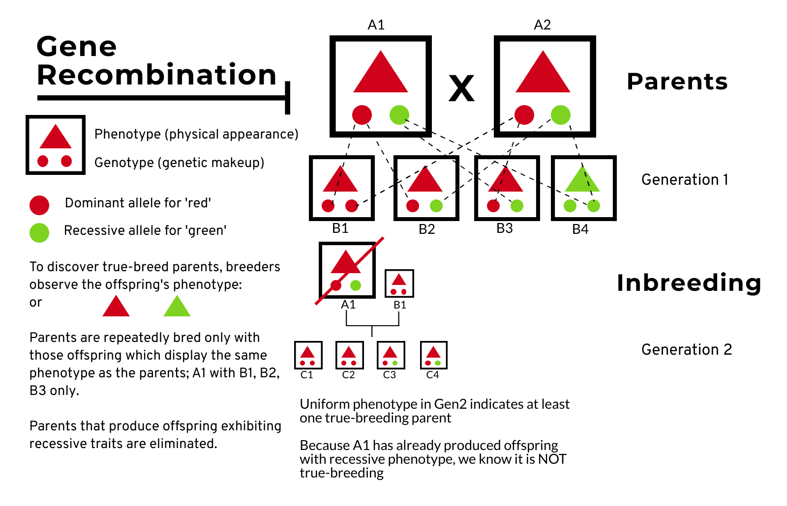
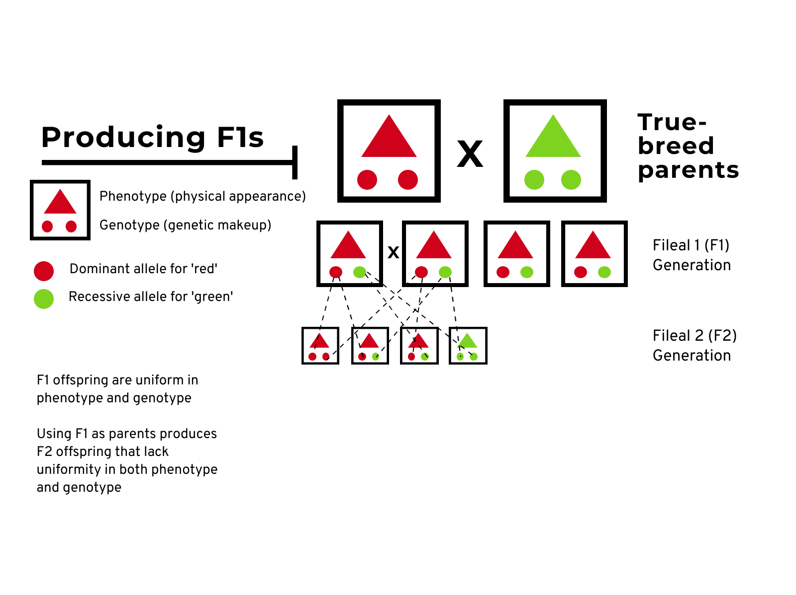
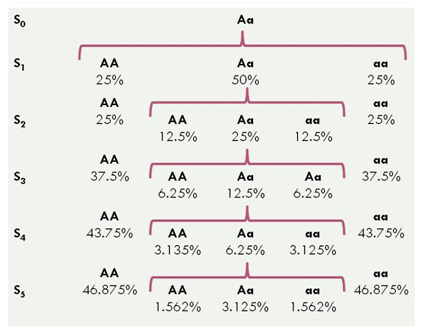
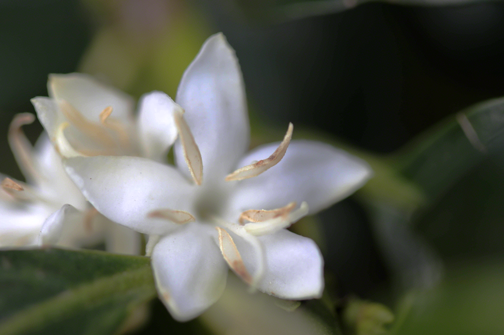
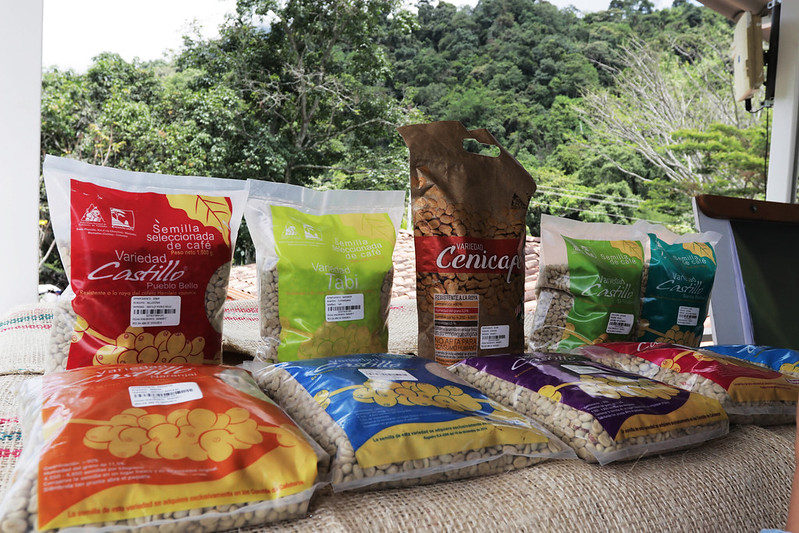

class: title, center, middle
# Starmaya Coffee, an F1 Hybrid
\#CaffeinatedTraining
\#OilSlickCoffee
@michael.c.wright
Caffeinated.tv
OilSlickCoffee.com
.footnote[
Press "h" for keyboard shortcuts for this presentation]
---
# Multiple, related papers
* G X E interactions on yield and quality in *Coffea arabica*: new F1 hybrids outperform American cultivars
* Development of a Male Sterility Based Reproductive System to Ensure a Cost Effective and Massive Propagation of New Outstanding F1 *Arabica* Hybrids by Seed
* Starmaya: The First Arabica F1 Coffee Hybrid Produced Using Genetic Male Sterility
* The World Technology Frontier
= open access, otherwise assume access is gated
.footnote[Links provided in show notes.]
???
Genes are incredibly important but traits are also heavily influenced by the environment!
Three papers focus on our three key concpets
"development of Male..." 25th International Conference on Coffee Science, 2014
---
class: center, inverse, middle
# Key concepts
.center[
F1 Hybrid
Male sterility
Seed garden
]
---
.left-column[
## F1 Hybrids
]
.right-column[
First filial generation (F1)
Simply; the first generation from a planned cross.
For seed production; often use inbred lines.
Key advantage: hybrid vigor (heterosis)
*The whole is greater than the sum of the parts*
]
.footnote[Hartmann, H. T., Davies, F. T., Geneve, R. L., & Wilson, S. B. (2018). *Hartmann & Kester’s plant propagation: Principles and practices* (Ninth edition). Pearson.]
???
Filial: Latin *filius* = son *filia* = daughter *filialis* = neuter
---
## True breeds

???
A simplified overview; a single locus for a specific trait in a diploid organism.
Arabica = tetraploid, Robusta = diploid
Genetics = a game of probability
This is just one method; another is selfing, which increases homozygosity.
Homozygous at given locus = "fixed"
---
## F1 Hybrids

---
.left-column[
## F1 Hybrids
]
.right-column[
Paul McCartney is great, but The Beatles were better!
In plant and animal breeding, desired heterotic characteristics are quantitative; that is, the underlying genes contribute incrementally to the traits of interest and often have interactive effects. This is in contrast to Mendelian genes whose alleles specify clear, alternative traits. Heterotic traits that are important in plant and animal agriculture include enhanced seed or biomass production (yield), seed composition, growth rate, stature, meat composition, litter size, and stress tolerance.[emphasis added]
]
.footnote[Timberlake, W. E. (2013). Heterosis. In *Brenner’s Encyclopedia of Genetics* (pp. 451–453). Elsevier. https://doi.org/10.1016/B978-0-12-374984-0.00705-1]
???
HARMONY
Hybrid vigor = heterosis
Heterotic characteristics = quantitative! 👈 the magic sauce of F1 hybrids
Stress tolerance = pest, disease, drought, etc! The paper G X E demonstrated hybrid superiority
---
.left-column[
## F1 Hybrids
## Male sterility
]
.right-column[
Arabica = autogamous = self-compatible = not a fun game of chance

]
.footnote[Image source: https://www.quora.com/Why-does-asexually-reproducing-crops-are-heterozygous]
???
Selfing increases probablity of fixed lines of AA & aa (homozygous for a given trait)
Inbreed depression = accumulation of homozygous loci and a loss of heterosis
Crossing is also a way to reduce the accumulation of detrimental alleles
Think about rust resistance: dominant trait, but with several gens of selfing = higher probability of loss of resistance
By generation 5, could be as high as 46% chance of homozygous, recessive locus. (diploid, of-course)
---
.left-column[
## F1 Hybrids
## Male sterility
]
.right-column[
Hermaphraditic + Self-compatible = difficult to control pollination
Many methods to work around this, but often 💰 and 🤔 and ⏱️
Time for the "snip-snip" ✂️

]
---
# Manual emasculation
.right[]
.footnote[*Coffee Botany, Biochemistry and Production of Beans and Beverage*. (2012). Springer Verlag.]
---
# Isolation bags
.right[]
.footnote[*Coffee Botany, Biochemistry and Production of Beans and Beverage*. (2012). Springer Verlag.]
---
.left-column[
## F1 Hybrids
## Male sterility
]
.right-column[
Hermaphraditic + Self-compatible = difficult to control pollination
Many methods to work around this, but often 💰 and 🤔 and ⏱️
Time for the "snip-snip" ✂️
With male-sterility, we don't need to emasculate!
]
???
CIR-SM01, an Ethiopian accession found in germplasm in Costa Rica
Bonus: male-sterility for CIR-SM01 Is hereditable! = a stable trait
All fruit borne by CIR-SM01 guaranteed from a cross and not from selfing.
---
.left-column[
## F1 Hybrids
## Male sterility
## Seed garden
]
.right-column[
Seed crops are not new.
Sole purpose is to produce seeds using planned cross
Seeds are very stable plant material. ✈️ 🚂 📦
]
???
Controlled pollination
* isolation distances
* high ratio of pollen donor to sterile male plants (1:4)
From: "Development of a Male Sterility Based Reproductive System"
---
class: center, inverse, middle
# Putting it all together
---
# F1 hybrids are generally:
* More likely to be climate-adaptable
* More likely to have higher yield
* More likely to be pest- and disease-resistant
And most importantly:
* More likely to help improve the livelihood of the smallholder farmer!
???
One of the key benefits of Starmaya: advancing the **technology frontier** for Indo coffee
What tech can be efficiently/effectively used
One reason technology not adapted by a country: little capacity to implement it
* Tech transfer without knowledge transfer = FAIL
* When lacking **factor endowment**
---
# F1s + Seed gardens help increase capacity
.middle[
* Inexpensive method for mass propagation of F1 hybrids!
* Democratizing elite plant stock (potentially)
* Knowledge and technology transfer (F1 hybrids, their benefits, deployment, etc)
* Local seed production systems
* Empower the farmer by improving decision-making abilities (informed decisions)
]
## Professionalized seed sector!
---
class: image

---
class: center, inverse, middle
Thank you for watching until the end!
\#CaffeinatedTraining
\#OilSlickCoffee
@michael.c.wright
Caffeinated.tv
OilSlickCoffee.com
---